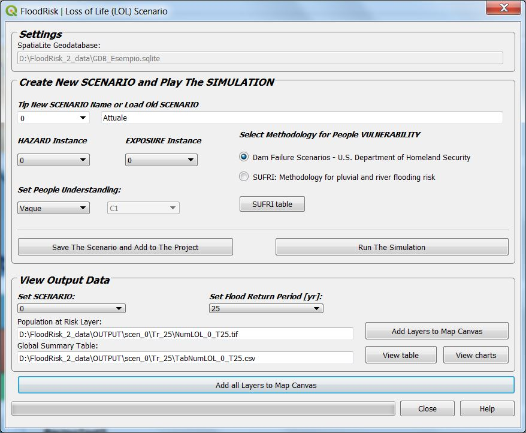

Loss of Life Assessment¶
The Loss of Life Assessment window allows you to asses the map of the population at risk and the number of potential fatalities for a given SCENARIO. In fact, as for the economic damages also in the Loss of Life Assessment it is possible to carry out evaluations for different scenarios that are a combination of hazard and exposure.
The map of the population at risk is obtained by superimposing the inundation map and the population density map. Once calculated the map of the population at risk, the number of potential fatalities is obtained by multiplying population at risk time the fatality rate. In addition to choosing the combination of hazard and exposure, the FloodRisk2 allows you to choose between two calculation methods of fatality rate:
Dam Failure Scenarios - U.S. Department of Homeland Security
SUFRI: Methodology for pluvial and river flooding risk
Once you have chosen one of the two methods, you need to select the value to be assigned to the People Understanding. For the meaning of the values refer to the bibliography. For SUFRI, which includes a considerable number of types, it is possible to view the table of meanings by pressing the “SUFRI table” button. For the case of * U.S. Department of Homeland Security * the value ** vague ** can be adopted if it is assumed that the event takes place at night and the value ** Precise ** in case it occurs during the day.

The list of data and results is summarized below, each for each return period:
Data concern population and their vulnerability are stored in the geodatabase.
Data concern the hazard are a map of maximum depth and maximum velocity values due to flooding. These data are the output from a 2D hydraulic model and are loaded into the system from any file type GDAL Raster Formats
Further data necessary to assess the vulnerability of the population is the map of the warning time. The warning time indicates the amount of time between the reception of a warning and the instant in which the population could be affected by the flood event. These data should be a polygons shapefile having a field called “TimeHours” containing the value of the warning time in hours.
Results are maps of population at risk and number of potential fatalities and a global summary table of the results which are also displayed in graphical form (histogram).
Note
Layers of results for each return period.
- Population at Risk Layer (*_pop.tif)
a GeoTIFF File Format having two output bands:
- band1
population density at risk (people per sq. km of land area)
- band2
loss of life density (people per sq. km of land area)
- Global summary table (*_pop.csv)
a csv File Format containing the table of results grouped by Range of Wather Depth